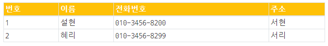

v-for 지시자를 사용하여 자신이 좋아하는 가수들을 출력하는 테이블을 작성하여 본다.
1. Object Array 를 만들어 화면과 같이 표시되게 하시오.
2. "추가" 버튼을 만들고 클릭 이벤트를 설정하시오.
3. "추가" 버튼을 클릭하면 행이 추가되게 작성하시오.
4. "추가" 버튼 기능 개선
input 태그 3개를 추가 하고
"추가" 버튼을 클릭하면
input 입력값을 이용하여 객체를 만들고
만들어진 객체를 Object Array에 추가한다.
<label for="">이름</label><input v-model:value="name">
<label for="">전화번호</label><input v-model:value="tel">
<label for="">주소</label><input v-model:value="address">